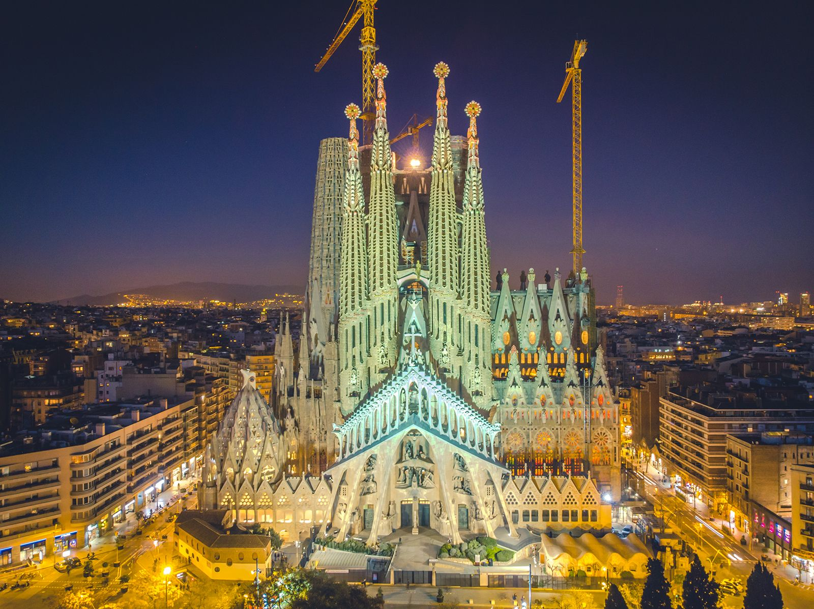
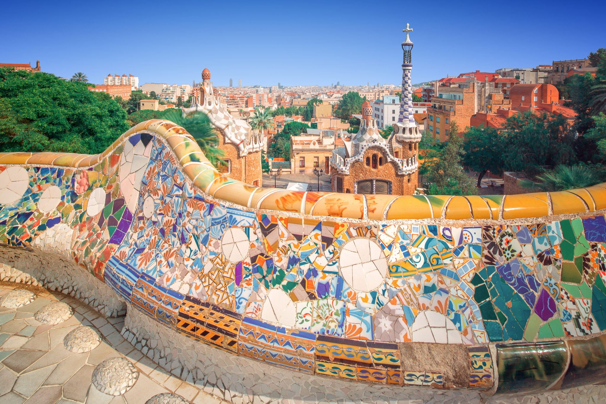
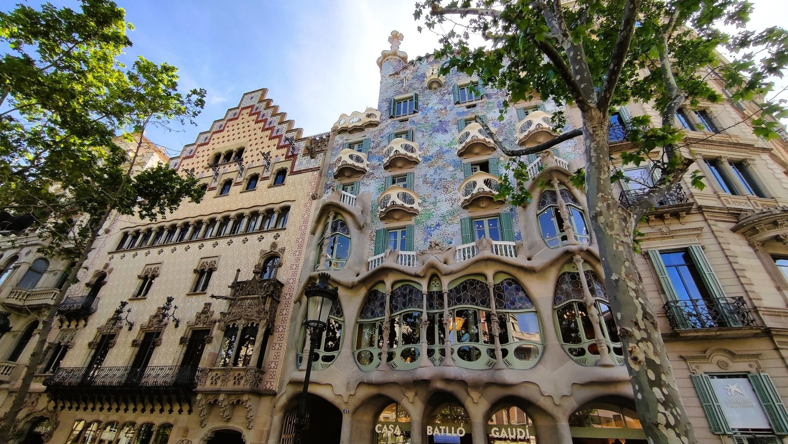
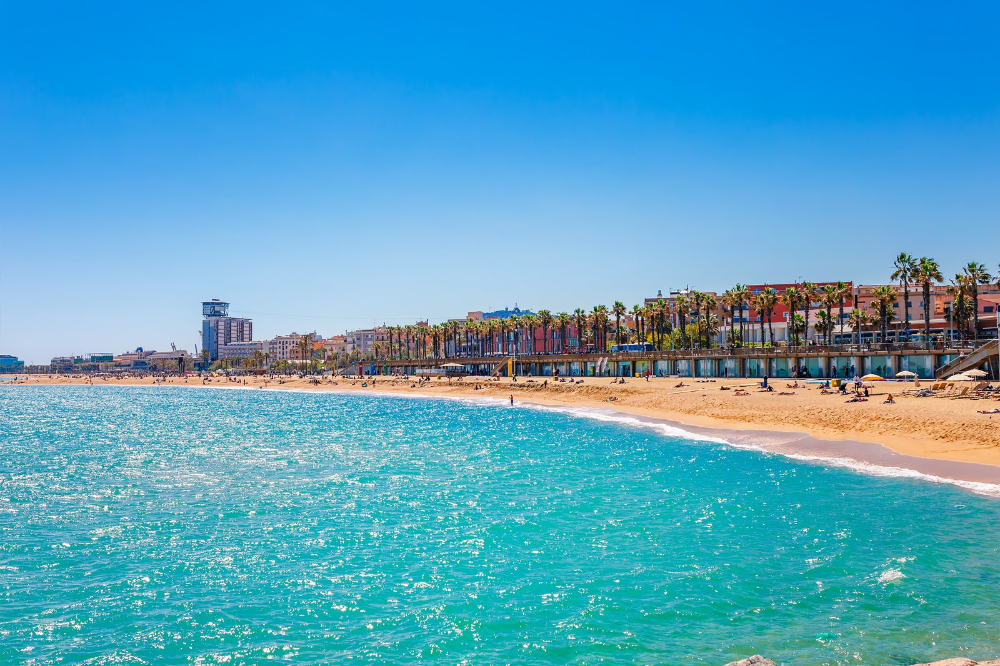

Sagrada Familia
Cunoscută de turiști drept Sagrada Família, catedrala are denumirea oficială de Templo Expiatorio de la Sagrada Famalia. Biserica romano-catolică a decis începerea construcţiei în anul 1882, această urmând să fie complet terminată abia în anul 2026. Proiectul catedralei este opera celebrului arhitect catalan Antoni Gaudi.
Biserica are 18 turnuri, în ordinea înălțimii reprezentând pe cei 12 apostoli, cei 4 evangheliști, Sfânta Fecioară și, cel mai înalt turn, pe Iisus Hristos. Turnul central al lui Iisus va avea montat pe el o cruce uriașă. Înălțimea totală, de 170 m, este cu un metru mai mică decât a unui deal de lângă Barcelona, deoarece Gaudi considera că lucrarea sa nu trebuie să fie mai mare decât cea a lui Dumnezeu.
 Cumpără biletParc Güell
Parcul Güell (în catalană Parc Güell, în spaniolă Parque Güell) este un parc cu elemente arhitectonice deosebite, situat în partea superioară a colinei El Carmel în districtul Gracia al Barcelonei, Catalonia, Spania. A fost proiectat de arhitectul Antonio Gaudí și construit între anii 1900 - 1914. Se află din 1984 printre locurile din patrimoniul mondial UNESCO.
Parcul se întinde pe o suprafață de 17.18 hectare. Designul arată în mod clar o parte a unui arhitect și stilul unic al lui Gaudi care rezultă evident din oricare element indiferent de dimensiunile acestuia. Există forme ondulate de parcă ar fi râuri de lavă, pasaje acoperite cu coloane de forma unor copaci, stalactite și forme geometrice.
 Cumpără biletCasa Batlló
Casa Batlló este una dintre clădirile emblematice ale Barcelonei, aflată pe vechea și cunoscuta stradă Passeig de Gràcia din Barcelona, alături de alte patru clădirile importante care se găsesc aici, adevărate capodopere arhitecturale, cu autori la fel de celebri, precum marele arhitect catalan Antoni Gaudi.
Deși casa este mai tot timpul aglomerată, plină de turiști în timpul vizitelor programate, liniștea nefirească din interior sugerează puternica impresie pe care interiorul acestei case creat de Gaudi o are asupra privitorilor, captivați, muți de uimire și admirație, pierduți printre formele, desenele, schițele imaginate de Antoni Gaudi și transpuse în fiecare încăpere, perete, tavan, hol, ușă, pe acoperiș sau pe fațada clădirii.
stalactite și forme geometrice.  Cumpără biletPlaja Barceloneta
Plaja Barceloneta se întinde pe o lungime de aproximativ 1,1 km și se află în inima orașului Barcelona. Cu acces ușor din centrul orașului, această plajă este extrem de populară atât printre localnici, cât și printre turiști. Cu toate că este situată într-un oraș vibrant și aglomerat, atmosfera de pe plaja Barceloneta este una relaxantă și plină de energie.
Plaja este renumită pentru nisipul său fin și curat, perfect pentru plimbări desculțe sau jocuri pe plajă. Apa mării este de asemenea foarte limpede, oferindu-vă oportunitatea să înotați și să vă răcoriți în timpul zilelor fierbinți de vară.
 Croaziere și activități